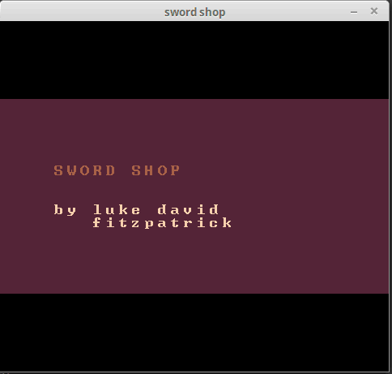

LUKE FITZPATRICK'S PORTFOLIO
Featured below are a selection of the projects I have worked on over the last few years, largely in my spare time. Most of my projects since 2014 are on
my Github page.
(this image includes private contributions so it will look different on the github page...)
I love designing, planning and implementing all kinds of software. I started programming in 2010 when I was 14, and I've been consistently growing as a programmer and software designer ever since.
I'm comfortable programming in C, Python and Java and I have some basic familiarity with C++ and HTML/CSS/Javascript. Software tools I regularly use include Git, Emacs, Visual Studio, LaTeX, and the Linux command line.
May 2016 As part of
a Machine Learning and Data Mining
course I completed at UNSW, I developed a system using Reinforcement
Learning in Python to improve traffic
flow through an intersection. (I can't publish the full report because
this was an assignment, contact me for a closer look, and the source
code)
Work in Progress I'm working on scraping and analysing NRL match statistics using
Python and
lxml. (
Github Repository)

December 2015 I created a platformer game engine using
Python and
Pygame. It supports live level editing, level storage, key rebinding, a physics and collision engine, and a robust graphics handling system including support for animation. (
Github Repository)
November 2015 I created a game where you control elevators using
Python and
Pygame. To help with this, I also made a little animation preview tool.
(
Github Repository)
February 2016 I created a simple music ratings website using
HTML/CSS
(
The website)

February 2016 I created a band and song name generator using
C++.
(
Github Repository)
June 2015 I created a game where you buy and sell swords using
Python and
libtcod.
(
Github Repository)

and I also made this website!
contact me at lukedfitzpatrick@gmail.com